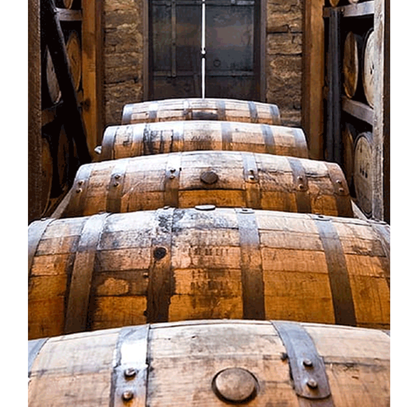
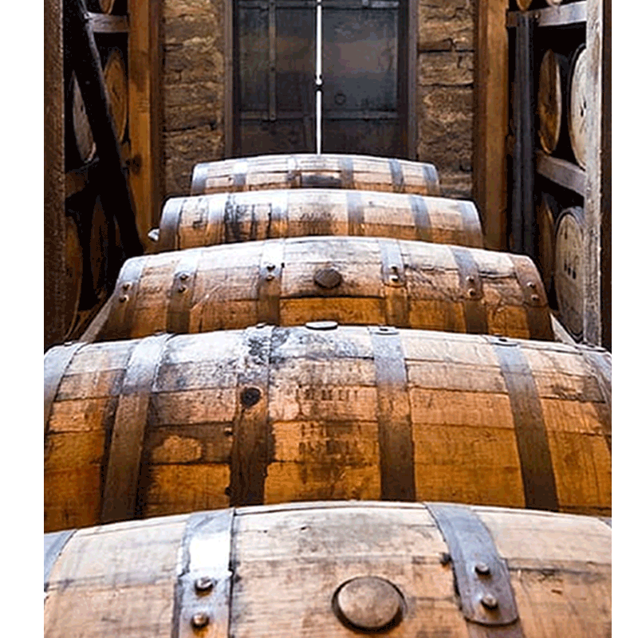

Nuestra historia

La historia del ron comenzó con la llegada de los europeos pues ellos trajeron la caña de azúcar que tuvo como primer domicilio la República Dominicana y como vecino al Mar Caribe. Esta planta formó parte del equipaje que acompañó a Cristóbal Colón, en su segundo viaje a América, en 1493.
En la historia del ron los piratas también tienen su capítulo ya que trajeron a las Antillas una bebida que elaboraban a partir del guarapo de la caña de azúcar que llamaron Kill-Devil (mata diablo) o rumbellion, que significa tumulto. No se sabe si el nombre del ron se originó de esa palabra o del nombre científico de la caña de azúcar: Saccharum Officiarum. El primer documento donde se menciona data del 8 de julio de 1661. Fue emitido por el gobernador de Jamaica y en ese texto se le llamaba simplemente “rum”.
Dave Broom en su libro titulado Rum señala que: “Al principio el ron fue una bebida autóctona pensada para sirvientes”. En los siglos XVII y XVIII sirvió como moneda para comprar a los esclavos que trabajaban en los cañaverales. Hasta finales del siglo XVIII era la bebida preferida de los marinos. En 1693 un dominico estudioso del ron, el padre Jean-Baptiste Labat, perfeccionó el alambique y utilizó el método empleado para el coñac. El resultado revolucionó la industria del ron en las colonias francesas.
 
